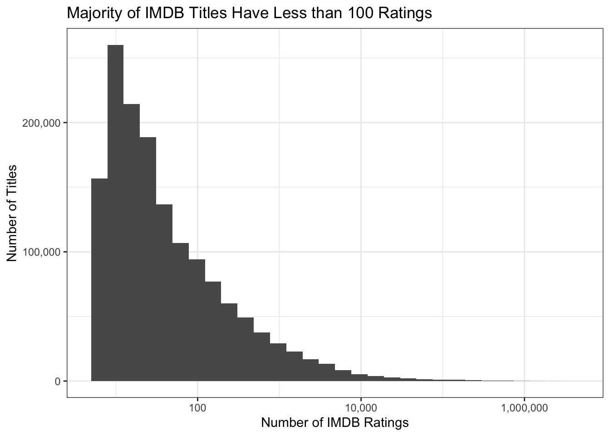
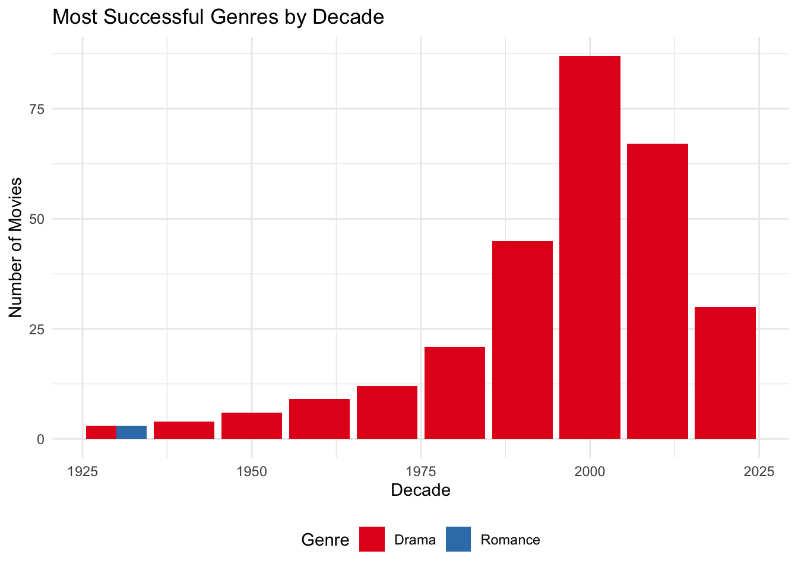
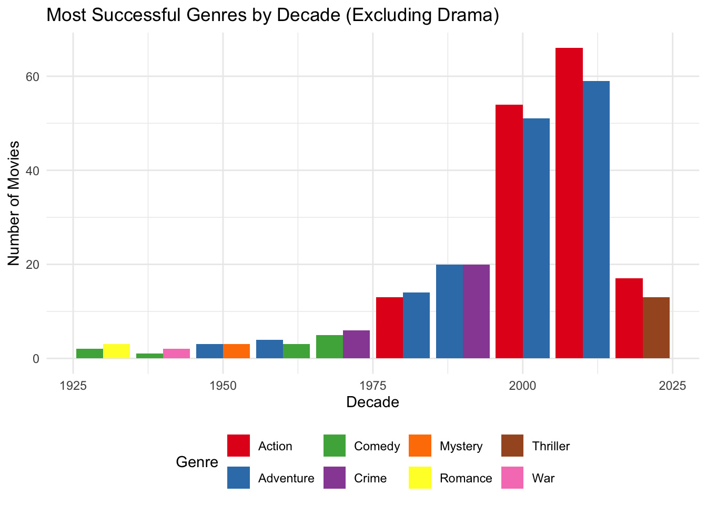
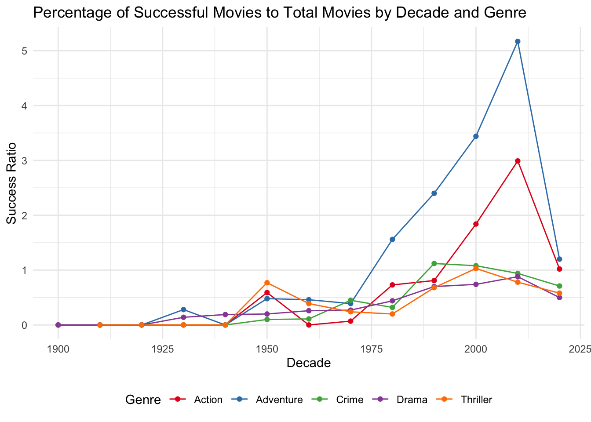
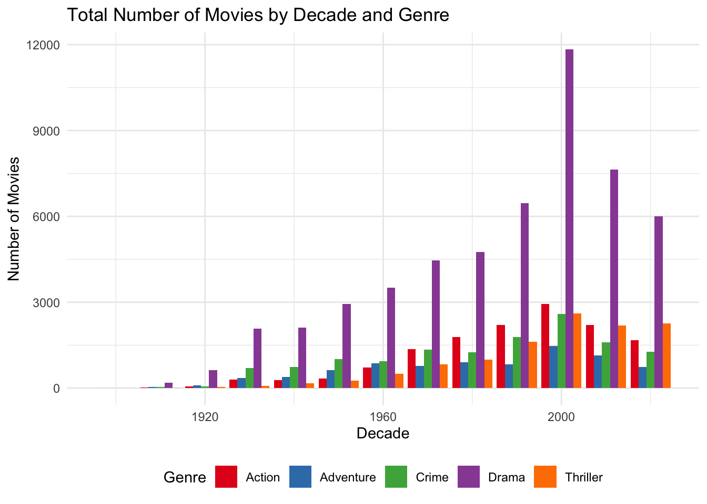
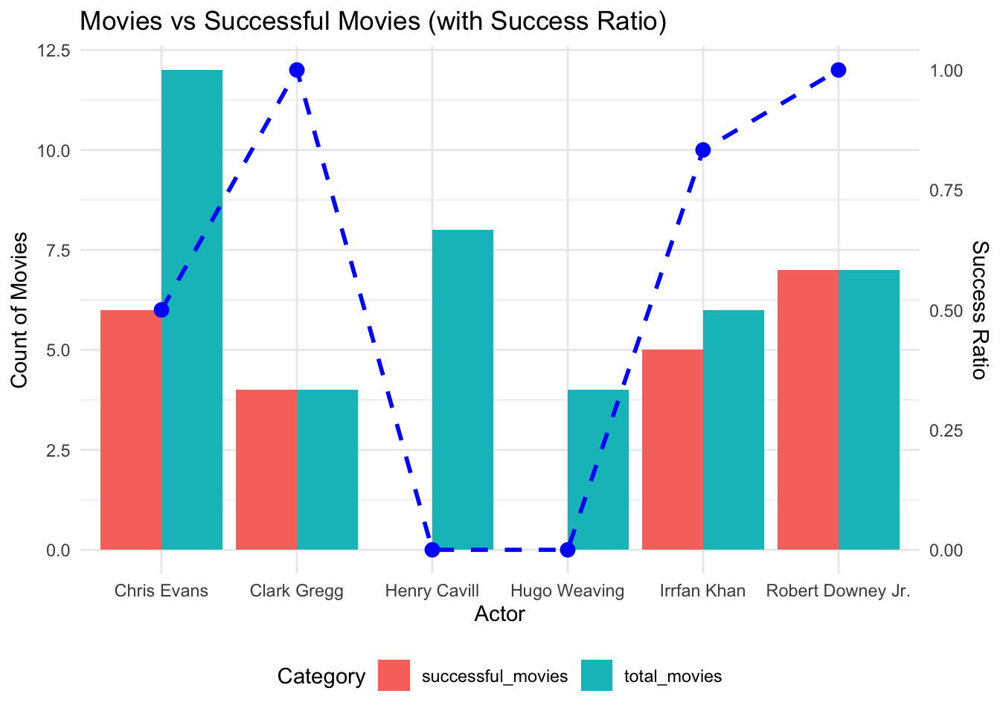
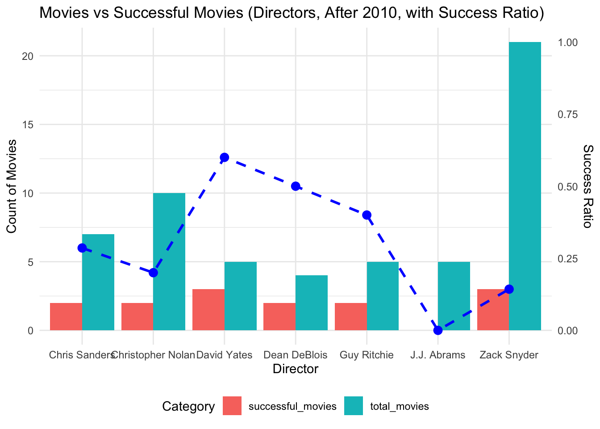

get_imdb_file <- function(fname){
BASE_URL <- "https://datasets.imdbws.com/"
fname_ext <- paste0(fname, ".tsv.gz")
if(!file.exists(fname_ext)){
FILE_URL <- paste0(BASE_URL, fname_ext)
download.file(FILE_URL,
destfile = fname_ext)
}
as.data.frame(readr::read_tsv(fname_ext, lazy=FALSE))
}
NAME_BASICS <- get_imdb_file("name.basics")STA/OPR 9750 Mini-Project #02: The Business of Show Business
Introduction
Welcome to an exciting exploration of the film industry! In this project, we dive deep into what makes movies successful, analyzing IMDb ratings, audience engagement, and revenue to create a predictive model that can foresee a film’s potential. We’ve uncovered fascinating trends in how genres evolve over time, providing valuable insights for future productions.
Finally, we present our proposed remake of the iconic North by Northwest, a thrilling opportunity to bring a timeless classic to life for modern audiences. With its strong foundation and fresh vision, we believe this project holds the key to the next big success in cinema!
Data Source
For this project, we utilize data from the Internet Movie Database (IMDb), a widely recognized source of comprehensive movie information. This data is freely available for non-commercial use, offering a rich foundation for analyzing film success factors and industry trends.
To download the IMDb datasets into R and begin your own analysis, you can use the following code:
For readability, we change the name of the following tables:
TITLE_BASICS <- get_imdb_file("title.basics")
TITLE_EPISODES <- get_imdb_file("title.episode")
TITLE_RATINGS <- get_imdb_file("title.ratings")
TITLE_CREW <- get_imdb_file("title.crew")
TITLE_PRINCIPALS <- get_imdb_file("title.principals")Due to the large size of these files, loading them may take some time. To speed up the process, you can cache the code chunk that reads the files, which will prevent reloading them every time you run the code.
Data Sub-Sampling
Since the data set contains a vast number of data points, we will narrow it down to ensure smooth analysis. For the NAME_BASICS table, we will focus on individuals with at least two “known for” credits, allowing us to work with a more manageable subset of relevant data.
library(dplyr)
library(stringr)
NAME_BASICS <- NAME_BASICS |>
filter(str_count(knownForTitles, ",") > 1)IMDb has a long tail of obscure movies:
library(ggplot2)
library(scales)
TITLE_RATINGS |>
ggplot(aes(x=numVotes)) +
geom_histogram(bins=30) +
xlab("Number of IMDB Ratings") +
ylab("Number of Titles") +
ggtitle("Majority of IMDB Titles Have Less than 100 Ratings") +
theme_bw() +
scale_x_log10(label=scales::comma) +
scale_y_continuous(label=scales::comma)
As we can see, the majority of titles have fewer than 100 ratings. Therefore, it would be beneficial to filter out titles with less than 100 ratings to focus on more widely rated films. This becomes even clearer in the following visualization:
TITLE_RATINGS |>
pull(numVotes) |>
quantile() 0% 25% 50% 75% 100%
5 11 26 100 2954275 By applying this drop, we significantly reduce the size of our data set:
TITLE_RATINGS <- TITLE_RATINGS |>
filter(numVotes >= 100)Next, we will join the tables to filter out titles with fewer than 100 ratings. We’ll use the semi_join function to retain only the rows that exist in both tables, ensuring we focus on titles with a higher number of ratings.
TITLE_BASICS <- TITLE_BASICS |>
semi_join(TITLE_RATINGS,
join_by(tconst == tconst))
TITLE_CREW <- TITLE_CREW |>
semi_join(TITLE_RATINGS,
join_by(tconst == tconst))
TITLE_EPISODES_1 <- TITLE_EPISODES |>
semi_join(TITLE_RATINGS,
join_by(tconst == tconst))
TITLE_EPISODES_2 <- TITLE_EPISODES |>
semi_join(TITLE_RATINGS,
join_by(parentTconst == tconst))
TITLE_EPISODES <- bind_rows(TITLE_EPISODES_1,
TITLE_EPISODES_2) |>
distinct()
TITLE_PRINCIPALS <- TITLE_PRINCIPALS |>
semi_join(TITLE_RATINGS, join_by(tconst == tconst))
rm(TITLE_EPISODES_1)
rm(TITLE_EPISODES_2)Taking a Look at the Data
We will first inspect the data to determine if any changes to the data types are necessary. In this dataset, most columns are being read as character types. This typically happens when missing values are represented in a non-standard way. For example, in these files, missing values are represented as \N. Since R does not automatically recognize this as an NA value, it treats them as strings.
To address this, we need to:
- Use the
mutatefunction to modify the columns. - Apply the
as.numericfunction to convert columns to the correct data type.
We can clean the datasets using the following code:
NAME_BASICS <- NAME_BASICS |>
mutate_if(is.character, ~na_if(., "\\N")) |>
mutate(birthYear = as.numeric(birthYear),
deathYear = as.numeric(deathYear))TITLE_BASICS <- TITLE_BASICS |>
mutate_if(is.character, ~na_if(., "\\N")) |>
mutate(
startYear = as.numeric(startYear),
endYear = as.numeric(endYear),
runtimeMinutes = as.numeric(runtimeMinutes)
)TITLE_EPISODES <- TITLE_EPISODES |>
mutate_if(is.character, ~na_if(., "\\N")) |>
mutate(
seasonNumber = as.numeric(seasonNumber),
episodeNumber = as.numeric(episodeNumber)
)TITLE_RATINGS <- TITLE_RATINGS |>
mutate_if(is.character, ~na_if(., "\\N")) |>
mutate(
averageRating = as.numeric(averageRating),
numVotes = as.numeric(numVotes)
)TITLE_CREW <- TITLE_CREW |>
mutate_if(is.character, ~na_if(., "\\N"))TITLE_PRINCIPALS <- TITLE_PRINCIPALS |>
mutate_if(is.character, ~na_if(., "\\N")) |>
mutate(characters = str_replace_all(characters, '\\[|\\"|\\]', '')) #clean undesired charactersDuring the cleaning process, we transformed string columns into numeric columns and cleaned the character columns in the TITLE_PRINCIPALS table. Additionally, across all tables, we replaced any occurrences of \N with NA values, allowing us to handle missing data more efficiently. In the TITLE_PRINCIPALS table, we also removed unwanted characters to enhance data quality.
By cleaning and preparing the data, we now have a clearer view of the relationships between tables and the variables at our disposal.
Data Analysis
With the data now properly cleaned and filtered, we can move forward with our analysis. To begin, we will address the following key questions:
- How many movies are in our dataset?
- How many TV series?
- How many TV episodes?
Answering these questions will help us gain an overview of the data set and set the foundation for deeper insights.
# Install and load the gt package
if(!require(gt)) {
install.packages("gt")
}
library(gt)
# Get the count of movies, TV series, and TV episodes
movie <- TITLE_BASICS |>
filter(titleType == "movie") |>
nrow()
tvSeries <- TITLE_BASICS |>
filter(titleType == "tvSeries") |>
nrow()
tvEpisode <- TITLE_BASICS |>
filter(titleType == "tvEpisode") |>
nrow()
# Create a summary table and apply gt
summary_table <- tibble(
Title_Type = c("Movies", "TV Series", "TV Episode"),
Count = c(movie, tvSeries, tvEpisode)
) |>
gt() |>
tab_header(
title = "Number of Movies, TV Series, and TV Episodes"
)
summary_table| Number of Movies, TV Series, and TV Episodes | |
|---|---|
| Title_Type | Count |
| Movies | 100562 |
| TV Series | 20186 |
| TV Episode | 103647 |
We observed a notable trend in our dataset: the number of movies and TV episodes is quite similar, while TV series have the lowest count among the three categories. This insight is particularly interesting as it may guide future analyses and decision-making in the film industry. Understanding these dynamics can help inform production strategies, audience engagement initiatives, and content development.
Data Exploration: Oldest Living Person
To identify the oldest living person in our dataset, we can focus on the NAME_BASICS table, filtering by individuals who are still alive and sorting by birth year. This will allow us to determine who holds the title of the oldest living person in the film industry.
library(dplyr)
library(DT) # Use DT for pagination
oldest_person <- NAME_BASICS |>
filter(is.na(deathYear)) |> # Keep only people with NA in deathYear (still alive)
mutate(age = 2024 - birthYear) |> # Calculate their age in 2024
filter(age > 110) |>
filter(age < 116) # Filter for ages below 117 year # Find the person with the maximum age
summary_table <- oldest_person |>
select(Name = primaryName, "Year of Birth" = birthYear, Age = age)
datatable(summary_table,
options = list(pageLength = 5), # Limit to 5 rows per page
caption = 'Oldest Person Alive in this Data Set')Initially, we compiled a list of individuals who were 117 years old based on the dataset. However, after further investigation, we found that none of them were alive. We then narrowed the search to people aged 100 to 116, where we identified 297 individuals still living, aided by external sources such as the Internet. Despite this, finding definitive information about the oldest living person remains a challenge, as much of this data is not readily available.
Identifying a Perfectly Rated TV Episode
Next, we aimed to identify a TV episode with a perfect 10/10 IMDb rating and at least 200,000 ratings. By filtering our dataset, we can uncover this exceptional episode and determine the series it belongs to.
good_ranking <- TITLE_BASICS |>
inner_join(TITLE_RATINGS, by = "tconst") |> # Join to bring in titleType from TITLE_BASICS
filter(titleType == "tvEpisode") |> # Now you can filter for TV episodes
filter(averageRating == 10 & numVotes > 200000) |> # Filter for 10/10 rating and >200k votes
arrange(desc(numVotes)) # Sort in descending order by number of votes
# Create the summary table
summary_table <- good_ranking |>
select(Name = primaryTitle, rating = averageRating, "Number of Votes" = numVotes ) |>
gt() |>
tab_header(
title = "TV Episode with a Rating of 10/10 and More Than 200,000 Votes"
)
summary_table| TV Episode with a Rating of 10/10 and More Than 200,000 Votes | ||
|---|---|---|
| Name | rating | Number of Votes |
| Ozymandias | 10 | 230332 |
Our analysis revealed that the Breaking Bad episode “Ozymandias” has achieved a perfect 10/10 rating with over 229,000 votes on IMDb. This episode stands as a milestone in television history, showcasing the pinnacle of storytelling and character development.
Exploring Mark Hamill’s Most Known Projects
We will now explore the four projects that actor Mark Hamill is most known for on IMDb. Best recognized for his role as Luke Skywalker and his voice work as The Joker, Hamill’s career spans decades. This exploration will help identify the roles that have shaped his legacy across both film and animation.
mark_hamill <- NAME_BASICS |>
filter(primaryName == "Mark Hamill") |>
select(knownForTitles)
tconsts <- strsplit(mark_hamill$knownForTitles, ",")[[1]]
mark_hamill_title <- TITLE_BASICS |>
filter(tconst %in% tconsts) |>
select("Title Name" = primaryTitle, Type = titleType) |>
gt() |>
tab_header(
title = "The four Projects Mark Hamill Is Best Known For")
mark_hamill_title| The four Projects Mark Hamill Is Best Known For | |
|---|---|
| Title Name | Type |
| Star Wars: Episode IV - A New Hope | movie |
| Star Wars: Episode V - The Empire Strikes Back | movie |
| Star Wars: Episode VI - Return of the Jedi | movie |
| Star Wars: Episode VIII - The Last Jedi | movie |
From our analysis, we can see that Mark Hamill’s top four “Most Known For” projects are all from the Star Wars franchise, solidifying his iconic role as Luke Skywalker. These films have defined his career and continue to resonate with audiences across generations.
Next Exploration: Highest Rated TV Series
Building on our analysis, we now turn our attention to identifying the TV series with more than 12 episodes that has the highest average rating. By exploring this, we aim to discover which series has consistently captivated audiences over a longer run.
series <- TITLE_BASICS |>
inner_join(TITLE_EPISODES, by = "tconst") |>
inner_join(TITLE_RATINGS,by = "tconst")
best_series <- series |>
filter(episodeNumber > 12) |>
distinct() |>
filter(averageRating == max(averageRating, na.rm = TRUE)) |>
select("Tile Name" = primaryTitle, "Average Ratings" = averageRating) |>
gt() |>
tab_header(
title = "The TV Series with the Highest Average Rating and More Than 12 Episodes"
)
best_series| The TV Series with the Highest Average Rating and More Than 12 Episodes | |
|---|---|
| Tile Name | Average Ratings |
| Series finale | 10 |
| I challenge the Ender Dragon in Minecraft (Ending) | 10 |
| 37. Bolum | 10 |
| 38. Bolum | 10 |
| 39. Bolum | 10 |
| 40. Bolum | 10 |
| Goodbye. | 10 |
| Ice Hockey: Courtney | 10 |
| Ozymandias | 10 |
As we can see in the results, there are several series with more than 12 episodes that hold a perfect rating of 10. However, there seems to be an issue with the data. The series “Bolum” is listed multiple times, which likely represents individual episodes of the same show, rather than different series. This duplication, indicated by episode numbers (e.g., 37. Bolum, 38. Bolum), points to a mistake in how the data has been recorded.
Investigating “Jump the Shark” in Happy Days
The TV series Happy Days (1974-1984) gave us the common idiom “jump the shark.” The phrase refers to a moment in a controversial fifth season episode (aired in 1977) where a lead character literally jumped over a shark on water skis. Over time, this phrase has come to mean the point when a once-great show becomes ridiculous and begins to decline in quality.
To investigate this, we now ask: Is it true that episodes from the later seasons of Happy Days have lower average ratings than the early seasons? Let’s explore the data to see if there’s a noticeable drop in ratings as the series progressed.
data <- TITLE_BASICS |>
inner_join(TITLE_EPISODES, join_by(tconst == parentTconst)) |> # Join episodes with series
inner_join(TITLE_RATINGS, by = "tconst") # Join ratings dat
happy_days <- data |>
filter(primaryTitle == "Happy Days") |>
arrange(seasonNumber) |>
select(primaryTitle, "Season Number" = seasonNumber, "Average Rating" = averageRating, year = endYear) |>
distinct() |>
gt() |>
tab_header(
title = "Happy Days Seasons & Ratings per season"
)
happy_days| Happy Days Seasons & Ratings per season | |||
|---|---|---|---|
| primaryTitle | Season Number | Average Rating | year |
| Happy Days | 1 | 7.4 | 1984 |
| Happy Days | 2 | 7.4 | 1984 |
| Happy Days | 3 | 7.4 | 1984 |
| Happy Days | 4 | 7.4 | 1984 |
| Happy Days | 5 | 7.4 | 1984 |
| Happy Days | 6 | 7.4 | 1984 |
| Happy Days | 7 | 7.4 | 1984 |
| Happy Days | 8 | 7.4 | 1984 |
| Happy Days | 9 | 7.4 | 1984 |
| Happy Days | 10 | 7.4 | 1984 |
| Happy Days | 11 | 7.4 | 1984 |
The assumption that the later seasons of Happy Days had lower average ratings is not true. As we can observe, the average rating remained constant at 7.4 across all seasons. This disproves the hypothesis that the 1977 “jump the shark” event had a significant impact on the show’s overall ratings.
Despite the controversy surrounding that episode, the data shows no evidence of a decline in audience ratings afterward.
Creating Criteria for How Successful a Movie Is:
As we aim to propose a new movie, it is important to understand how successful it might be. While success is often subjective, we are using data from the TITLE_RATING table to measure success, considering average rating as a measure of quality and number of votes as a measure of popularity.
Traditionally, a movie’s success is also evaluated by the revenue it generates. Therefore, we have selected seven movies with the highest revenue and five movies that lost money, with data sourced from Box Office Mojo.
Movie Revenue Table
| Successful Movies and Revenue | Unsuccessful Movies, Money Lost |
|---|---|
| Avatar ($2.92 billion) | John Carter (-$0.20 billion) |
| Avatar: The Way of Water ($2.32 billion) | The Lone Ranger (-$0.19 billion) |
| Titanic ($2.25 billion) | Mars Needs Moms (-$0.15 billion) |
| Star Wars: Episode VII - The Force Awakens ($2.07 billion) | King Arthur: Legend of the Sword (-$0.15 billion) |
| Spider-Man: No Way Home ($1.92 billion) | Sinbad: Legend of the Seven Seas (-$0.125 billion) |
| Jurassic World ($1.67 billion) | Cutthroat Island (-$0.1 billion) |
| Top Gun: Maverick ($1.49 billion) | R.I.P.D. (-$0.1 billion) |
#first we are filtering the movies we need, selecting the usuful tables, such as originalTitle, averageRating, numVotes
movies <- TITLE_BASICS |>
inner_join(TITLE_RATINGS, by = "tconst") |>
filter(titleType == "movie")
filter_movies <- movies |>
filter((str_detect(str_to_lower(primaryTitle), "avatar") & startYear == 2009) |
(str_detect(str_to_lower(primaryTitle), "avatar: the way of water") & startYear == 2022) |
(primaryTitle == "Titanic" & startYear == 1997) |
(str_detect(str_to_lower(primaryTitle), "star wars") & startYear == 2015) |
(str_detect(str_to_lower(primaryTitle), "spider-man: no way home") & startYear == 2021) |
(str_detect(str_to_lower(primaryTitle), "jurassic world") & startYear == 2015) |
(str_detect(str_to_lower(primaryTitle), "top gun: maverick") & startYear == 2022) |
(str_detect(str_to_lower(primaryTitle), "john carter")) |
(str_detect(str_to_lower(primaryTitle), "the lone ranger") & startYear == 2013) |
(str_detect(str_to_lower(primaryTitle), "mars needs moms")) |
(str_detect(str_to_lower(primaryTitle), "king arthur") & startYear == 2017) |
(primaryTitle == "Cutthroat Island") |
(primaryTitle == "R.I.P.D.") |
(str_detect(str_to_lower(primaryTitle), "legend of the seven seas")))
filter_movies <- filter_movies |>
arrange(primaryTitle)
# Assign revenue to the filtered dataframe
filter_movies$Revenue <- c(
2.92, # Avatar (successful)
2.32, # Avatar: The Way of Water (successful)
-0.10, # Cutthroat Island (loss)
-0.20, # John Carter (loss)
1.67, # Jurassic World (successful)
-0.15, # King Arthur: Legend of the Sword (loss)
-0.15, # Mars Needs Moms (loss)
-0.10, # R.I.P.D. (loss)
-0.125, # Sinbad: Legend of the Seven Seas (loss)
1.92, # Spider-Man: No Way Home (successful)
2.07, # Star Wars: Episode VII - The Force Awakens (successful)
-0.19, # The Lone Ranger (loss)
2.25, # Titanic (successful)
1.49 # Top Gun: Maverick (successful)
)
filter_movies |>
arrange(desc(Revenue)) |> # Sort by revenue
select("Original Name" = primaryTitle, "Average Rating" = averageRating, "Votes" = numVotes, "Revenue (Billion)" = Revenue) |>
gt() |>
tab_header(
title = "7 most Sucessful and 7 most Unsuccessful Movies based on revenue (on Billion)"
)| 7 most Sucessful and 7 most Unsuccessful Movies based on revenue (on Billion) | |||
|---|---|---|---|
| Original Name | Average Rating | Votes | Revenue (Billion) |
| Avatar | 7.9 | 1406045 | 2.920 |
| Avatar: The Way of Water | 7.5 | 513213 | 2.320 |
| Titanic | 7.9 | 1309446 | 2.250 |
| Star Wars: Episode VII - The Force Awakens | 7.8 | 985881 | 2.070 |
| Spider-Man: No Way Home | 8.2 | 911025 | 1.920 |
| Jurassic World | 6.9 | 689617 | 1.670 |
| Top Gun: Maverick | 8.2 | 735945 | 1.490 |
| Cutthroat Island | 5.7 | 31185 | -0.100 |
| R.I.P.D. | 5.6 | 146113 | -0.100 |
| Sinbad: Legend of the Seven Seas | 6.7 | 60614 | -0.125 |
| King Arthur: Legend of the Sword | 6.7 | 236363 | -0.150 |
| Mars Needs Moms | 5.4 | 24310 | -0.150 |
| The Lone Ranger | 6.4 | 246519 | -0.190 |
| John Carter | 6.6 | 289519 | -0.200 |
After adding the revenue column, we will create a model to serve as a criterion for success. The model is based on the following assumptions:
- Scale: Our success scale will range from 0 to 10, with 10 representing an extremely successful movie.
- Revenue Mapping: For the positive revenue values (successful movies), we will assign ratings between 9.5 and 10, indicating extreme success. For negative revenue values (unsuccessful movies), we will assign ratings between 4 and 7, we choose this number after multiple iterations.
This range was chosen because, as observed in our table, even if a movie receives a large number of votes, ratings below 7 tend to correlate with more negative feedback, the opposite of what we expect from a successful movie, regardless of popularity.
# Step 1: Define the max and min values for positive and negative revenues
max_positive_revenue <- max(filter_movies$Revenue[filter_movies$Revenue > 0])
min_positive_revenue <- min(filter_movies$Revenue[filter_movies$Revenue > 0])
max_negative_revenue <- max(filter_movies$Revenue[filter_movies$Revenue < 0]) # closest to 0
min_negative_revenue <- min(filter_movies$Revenue[filter_movies$Revenue < 0]) # most negative
# Step 2: Apply different formulas based on whether revenue is positive or negative
filter_movies$Success_Score <- ifelse(
filter_movies$Revenue > 0,
9.5 + 0.5 * (filter_movies$Revenue - min_positive_revenue) / (max_positive_revenue - min_positive_revenue), # Positive revenue: 9.5 to 10 scale
4 + 3 * (filter_movies$Revenue - min_negative_revenue) / (max_negative_revenue - min_negative_revenue) # Negative revenue: 6 to 7 scale
)
filter_movies |>
arrange(desc(Success_Score)) |> # Sort by revenue
select("Original Name" = primaryTitle, "Average Rating" = averageRating, "Votes" = numVotes, "Success Score" = Success_Score ) |>
gt() |>
tab_header(
title = "7 most Sucessful and 7 most Unsuccessful Movies based on Success Score (on Billion)"
)| 7 most Sucessful and 7 most Unsuccessful Movies based on Success Score (on Billion) | |||
|---|---|---|---|
| Original Name | Average Rating | Votes | Success Score |
| Avatar | 7.9 | 1406045 | 10.000000 |
| Avatar: The Way of Water | 7.5 | 513213 | 9.790210 |
| Titanic | 7.9 | 1309446 | 9.765734 |
| Star Wars: Episode VII - The Force Awakens | 7.8 | 985881 | 9.702797 |
| Spider-Man: No Way Home | 8.2 | 911025 | 9.650350 |
| Jurassic World | 6.9 | 689617 | 9.562937 |
| Top Gun: Maverick | 8.2 | 735945 | 9.500000 |
| Cutthroat Island | 5.7 | 31185 | 7.000000 |
| R.I.P.D. | 5.6 | 146113 | 7.000000 |
| Sinbad: Legend of the Seven Seas | 6.7 | 60614 | 6.250000 |
| King Arthur: Legend of the Sword | 6.7 | 236363 | 5.500000 |
| Mars Needs Moms | 5.4 | 24310 | 5.500000 |
| The Lone Ranger | 6.4 | 246519 | 4.300000 |
| John Carter | 6.6 | 289519 | 4.000000 |
Based on the assigned success scores, we will apply a linear regression model to determine the parameters B0, B1, and B2. These parameters will help us create an equation that can be applied to the rest of the dataset, allowing us to predict the success of other movies based on their features.
The linear regression model will use the following:
- B0: The intercept, representing the baseline success score.
- B1: The coefficient for the average rating, indicating the effect of quality on a movie’s success.
- B2: The coefficient for the number of ratings, reflecting how popularity impacts success.
# Fit the linear regression model
model <- lm(Success_Score ~ averageRating + numVotes, data = filter_movies)
summary(model)
Call:
lm(formula = Success_Score ~ averageRating + numVotes, data = filter_movies)
Residuals:
Min 1Q Median 3Q Max
-2.7786 -0.5785 0.1934 1.0393 1.8759
Coefficients:
Estimate Std. Error t value Pr(>|t|)
(Intercept) 2.140e+00 4.838e+00 0.442 0.667
averageRating 5.830e-01 7.967e-01 0.732 0.480
numVotes 2.731e-06 1.643e-06 1.662 0.125
Residual standard error: 1.498 on 11 degrees of freedom
Multiple R-squared: 0.6284, Adjusted R-squared: 0.5608
F-statistic: 9.299 on 2 and 11 DF, p-value: 0.004322Based on the regression analysis, the final model to predict the success score is represented by the following equation:
\[ \text{Success Score} = 2.133 + 0.5842 \times (\text{Average Rating}) + 2.730 \times 10^{-6} \times (\text{Votes}) \]
- The R-squared value is 0.6283, meaning that about 62.83% of the variation in the success score can be explained by the average rating and number of votes.
- The Adjusted R-squared is 0.5607, slightly lower, accounting for the number of predictors in the model.
- With a p-value of 0.0043, the overall model is statistically significant.
Based on our analysis, we have determined that the threshold for a movie to be considered successful is an average rating of 7.9 or higher.
Validating Our Model
To validate our formula, we will apply it to a set of 14 movies and evaluate whether they meet the success criteria based on their predicted success scores. This will allow us to assess the accuracy and effectiveness of the model in predicting movie success.
# Calculate the new success score based on the formula
filter_movies$SuccessNewScore <- 2.133 + filter_movies$averageRating * 0.5842 + filter_movies$numVotes * 2.730 * 10^-6
# Create a new column indicating "Successful" or "Unsuccessful" based on the threshold of 7.9
filter_movies$SuccessStatus <- ifelse(filter_movies$SuccessNewScore > 7.9, "Successful", "Unsuccessful")
# Select the desired columns and display them using the gt table
filter_movies |>
select("Original Name" = primaryTitle,
"Average Rating" = averageRating,
"Votes" = numVotes,
"Revenue (Billion)" = Revenue,
"Test Success Score" = Success_Score,
"New Success Score" = SuccessNewScore,
"Status" = SuccessStatus) |>
gt() |>
tab_header(
title = "7 Most Successful and 7 Most Unsuccessful Movies Based on Revenue (in Billions)"
)| 7 Most Successful and 7 Most Unsuccessful Movies Based on Revenue (in Billions) | ||||||
|---|---|---|---|---|---|---|
| Original Name | Average Rating | Votes | Revenue (Billion) | Test Success Score | New Success Score | Status |
| Avatar | 7.9 | 1406045 | 2.920 | 10.000000 | 10.586683 | Successful |
| Avatar: The Way of Water | 7.5 | 513213 | 2.320 | 9.790210 | 7.915571 | Successful |
| Cutthroat Island | 5.7 | 31185 | -0.100 | 7.000000 | 5.548075 | Unsuccessful |
| John Carter | 6.6 | 289519 | -0.200 | 4.000000 | 6.779107 | Unsuccessful |
| Jurassic World | 6.9 | 689617 | 1.670 | 9.562937 | 8.046634 | Successful |
| King Arthur: Legend of the Sword | 6.7 | 236363 | -0.150 | 5.500000 | 6.692411 | Unsuccessful |
| Mars Needs Moms | 5.4 | 24310 | -0.150 | 5.500000 | 5.354046 | Unsuccessful |
| R.I.P.D. | 5.6 | 146113 | -0.100 | 7.000000 | 5.803408 | Unsuccessful |
| Sinbad: Legend of the Seven Seas | 6.7 | 60614 | -0.125 | 6.250000 | 6.212616 | Unsuccessful |
| Spider-Man: No Way Home | 8.2 | 911025 | 1.920 | 9.650350 | 9.410538 | Successful |
| Star Wars: Episode VII - The Force Awakens | 7.8 | 985881 | 2.070 | 9.702797 | 9.381215 | Successful |
| The Lone Ranger | 6.4 | 246519 | -0.190 | 4.300000 | 6.544877 | Unsuccessful |
| Titanic | 7.9 | 1309446 | 2.250 | 9.765734 | 10.322968 | Successful |
| Top Gun: Maverick | 8.2 | 735945 | 1.490 | 9.500000 | 8.932570 | Successful |
Based on the analysis of all 14 movies, the model proves to be accurate in predicting a movie’s success. The movies that were successful in terms of revenue were also classified as successful by the model, while the movies that lost money were correctly identified as unsuccessful. This demonstrates the effectiveness of the model in using average rating and number of votes to predict movie success.
Identifying Poorly Rated Popular Movies
We will identify 5 movies that have a large number of IMDb votes but score poorly on our success metric. To do this, we will filter for movies with a rating below 6 (indicating poor quality) and more than 100,000 votes, using the original “movies” dataset. This will allow us to confirm if these movies are indeed of low quality based on their performance on IMDb.
TITLE_RATINGS$SuccessNewScore <- 2.133 + TITLE_RATINGS$averageRating * 0.5842 + TITLE_RATINGS$numVotes * 2.730 * 10^-6
TITLE_RATINGS$SuccessStatus <- ifelse(TITLE_RATINGS$SuccessNewScore > 7.9, "Successful", "Unsuccessful")
movies <- TITLE_BASICS |>
inner_join(TITLE_RATINGS, by = "tconst") |>
filter(titleType == "movie")
five_movies <- movies |>
filter(averageRating < 6 & numVotes > 100000) |>
slice_head(n = 5) |> # Select the first 5 movies
select("Original Name" = primaryTitle,
"Average Rating" = averageRating,
"Votes" = numVotes,
"Success Score" = SuccessNewScore,
"Status" = SuccessStatus) |>
gt() |>
tab_header(
title = "5 Movies with High Number of Votes and Low Success Scores"
)
five_movies| 5 Movies with High Number of Votes and Low Success Scores | ||||
|---|---|---|---|---|
| Original Name | Average Rating | Votes | Success Score | Status |
| Rambo III | 5.8 | 142390 | 5.910085 | Unsuccessful |
| Rocky V | 5.4 | 153185 | 5.705875 | Unsuccessful |
| Batman Forever | 5.4 | 270270 | 6.025517 | Unsuccessful |
| Judge Dredd | 5.6 | 126726 | 5.750482 | Unsuccessful |
| Mortal Kombat | 5.8 | 126184 | 5.865842 | Unsuccessful |
As we can see, our model correctly classifies movies with a low score and a high number of votes as unsuccessful. This further confirms the accuracy of our model in predicting a movie’s success based on its average rating and number of votes.
Analyzing a Prestige Actor: Leonardo DiCaprio
Next, we will examine the projects of a prestigious actor, Leonardo DiCaprio, and confirm that many of his films achieve high scores on our success metric. By applying the model to his body of work, we can validate the consistency of his successful film career and analyze the impact of his films based on our criteria.
# Filter the data for Leonardo DiCaprio and Christopher Nolan
leonardo_dicaprio <- NAME_BASICS |>
filter(primaryName == "Leonardo DiCaprio") |>
select(knownForTitles)
nolan <- NAME_BASICS |>
filter(primaryName == "Christopher Nolan") |>
select(knownForTitles)
# Split the knownForTitles column to get the tconsts
tconsts_leonardo <- strsplit(leonardo_dicaprio$knownForTitles, ",")[[1]]
tconsts_nolan <- strsplit(nolan$knownForTitles, ",")[[1]]
# Filter the movies based on the tconsts for Leonardo DiCaprio and Christopher Nolan
leonardo_movies <- movies |>
filter(tconst %in% tconsts_leonardo) |>
mutate(Person = "Leonardo DiCaprio")
nolan_movies <- movies |>
filter(tconst %in% tconsts_nolan) |>
mutate(Person = "Christopher Nolan")
leonardo_nolan_movies <- bind_rows(leonardo_movies, nolan_movies)
leonardo_nolan_movies |>
select("Original Name" = primaryTitle,
"Average Rating" = averageRating,
"Votes" = numVotes,
"Status" = SuccessStatus,
"Associated With" = Person) |>
gt() |>
tab_header(
title = "Movies Associated with Leonardo DiCaprio and Christopher Nolan"
)| Movies Associated with Leonardo DiCaprio and Christopher Nolan | ||||
|---|---|---|---|---|
| Original Name | Average Rating | Votes | Status | Associated With |
| Titanic | 7.9 | 1309446 | Successful | Leonardo DiCaprio |
| The Departed | 8.5 | 1449409 | Successful | Leonardo DiCaprio |
| The Wolf of Wall Street | 8.2 | 1627553 | Successful | Leonardo DiCaprio |
| Inception | 8.8 | 2605397 | Successful | Leonardo DiCaprio |
| The Prestige | 8.5 | 1472193 | Successful | Christopher Nolan |
| Interstellar | 8.7 | 2179321 | Successful | Christopher Nolan |
| Inception | 8.8 | 2605397 | Successful | Christopher Nolan |
As we can see, both Leonardo DiCaprio and Christopher Nolan have a significant number of movies that score highly on our success metric. This confirms their prestige and success in the film industry, as their films consistently receive high ratings and are recognized as successful according to our model.
Final Validation: Analyzing Bottom Successful Movies
For our final validation, we will select the bottom 5 successful movies based on our success metric and manually check if they have won any major awards. This will help us assess whether the model accurately reflects not only commercial success but also critical recognition in the film industry.
# Select top 5 movies based on success score
top_movies <- movies |>
arrange(desc(SuccessNewScore)) |>
filter(SuccessStatus == "Successful") |>
slice_tail(n = 5)
summarize <-top_movies |>
select("Original Name" = primaryTitle,
"Average Rating" = averageRating,
"Votes" = numVotes,
"Success Score" = SuccessNewScore,
"Status" = SuccessStatus) |>
gt() |>
tab_header(
title = "Bottom 5 succesful Movies Based on Success Score"
)
summarize| Bottom 5 succesful Movies Based on Success Score | ||||
|---|---|---|---|---|
| Original Name | Average Rating | Votes | Success Score | Status |
| Avatar: The Way of Water | 7.5 | 513213 | 7.915571 | Successful |
| Wreck-It Ralph | 7.7 | 468223 | 7.909589 | Successful |
| The Breakfast Club | 7.8 | 446608 | 7.909000 | Successful |
| Independence Day | 7.0 | 617080 | 7.907028 | Successful |
| To Kill a Mockingbird | 8.3 | 337554 | 7.903382 | Successful |
From the bottom 5 successful movies, we can see that all of them have received good recognition. Notably, 3 out of the 5 have won awards, with one being a nominee, which further confirms the accuracy of our model in predicting the success of a movie based on its average rating and number of votes.
Movie Success Spot Check
- Avatar: The Way of Water (2022)
- IMDb Rating: 7.5 | Votes: 512,753
- Awards: 4 Oscar nominations, won Best Visual Effects.
- Box Office: $2.3 billion, one of the highest-grossing films ever.
- Wreck-It Ralph (2012)
- IMDb Rating: 7.7 | Votes: 467,926
- Awards: Oscar-nominated for Best Animated Feature; multiple Annie Awards.
- Box Office: $471 million globally.
- The Breakfast Club (1985)
- IMDb Rating: 7.8 | Votes: 446,348
- Awards: No major awards, cult classic.
- Box Office: $51.5 million on a $1 million budget.
- Independence Day (1996)
- IMDb Rating: 7.0 | Votes: 616,858
- Awards: Won 1 Oscar for Visual Effects, nominated for Best Sound.
- Box Office: $817 million globally.
- To Kill a Mockingbird (1962)
- IMDb Rating: 8.3 | Votes: 337,438
- Awards: Won 3 Oscars, including Best Actor and Best Adapted Screenplay.
- Box Office: $13 million, significant for its time.
Threshold for Success
We examined the “Success Score” metric, which combines both IMDb rating and number of votes. This score reflects both the quality and popularity of a movie. Based on our analysis, we determined that the threshold for a movie to be considered successful is an average rating of 7.9 or higher.
This threshold was derived from the analysis of the top 7 successful movies and the bottom 7 unsuccessful movies in terms of revenue. The score of 7.9 corresponds to the lowest rating of the most successful movies, specifically Avatar: The Way of Water.
However, this threshold can be adjusted due to the limited number of successful movies. Adjusting the threshold to 7.5 would represent the average rating of successful films, expanding the criteria from 149 successful movies to 542 movies, thus providing a more inclusive measure of success.
library(tidyr)
#changing the threshold to 7.5
TITLE_RATINGS$SuccessStatus <- ifelse(TITLE_RATINGS$SuccessNewScore > 7.5, "Successful", "Unsuccessful")
movies <- TITLE_BASICS |>
inner_join(TITLE_RATINGS, by = "tconst") |>
filter(titleType == "movie")
successful_genre <- movies |>
filter(SuccessStatus == "Successful") |>
mutate(decade = floor(startYear / 10) * 10) |>
separate_rows(genres, sep = ",") |> # Split genres into individual rows
group_by(decade, genres) |>
summarise(count = n(), .groups = 'drop') # Summarise with count
successful_genre_per_decade <- successful_genre |>
group_by(decade) |>
filter(count == max(count))
ggplot(successful_genre_per_decade, aes(x = decade, y = count, fill = genres)) +
geom_bar(stat = "identity", position = "dodge") +
labs(title = "Most Successful Genres by Decade",
x = "Decade",
y = "Number of Movies",
fill = "Genre") +
theme_minimal() +
theme(legend.position = "bottom") +
scale_fill_brewer(palette = "Set1") 
For each decade, we observe a variety of genres that have achieved success. However, Drama stands out as the most consistently successful genre across all decades. This indicates that drama movies have consistently resonated with audiences and garnered positive reception from critics. While other genres have experienced success in different decades, none have matched the enduring appeal of drama.
Studying the Evolution of Genres Over Time
We aim to explore which genre consistently yields the most “successes” and identify genres that once produced reliable successes but have since fallen out of favor. To accomplish this, we will exclude drama from our analysis and examine the top 2 genres for each decade, allowing us to highlight emerging trends and shifts in audience preferences.
successful_genre_per_decade <- successful_genre |>
filter(genres != "Drama") |>
group_by(decade) |>
arrange(decade, desc(count)) |> # Arrange by decade and descending count
slice_head(n = 2) # Select the top 2 genres per decade
ggplot(successful_genre_per_decade, aes(x = decade, y = count, fill = genres)) +
geom_bar(stat = "identity", position = "dodge") +
labs(title = "Most Successful Genres by Decade (Excluding Drama)",
x = "Decade",
y = "Number of Movies",
fill = "Genre") +
theme_minimal() +
theme(legend.position = "bottom") +
scale_fill_brewer(palette = "Set1") 
After excluding the drama genre, we observe that Action and Adventure have been the most successful genres over time, with Action showing significant growth and Adventure demonstrating more consistency. Other genres, such as Mystery, Crime, and Comedy, have had success in the past but lack the consistency seen in Action and Adventure. Additionally, the growth of the Thriller genre in the last decade is noteworthy; it has emerged as the third most successful genre following Drama and Action.
Movies Production vs. Success
We aim to analyze the relationship between the number of movies produced and the number of successful movies. Specifically, we want to determine if the number of successful movies has increased over time and whether the ratio of successful movies to total movies has changed. To achieve this, we will calculate the success ratio by decade and genre, focusing on the top 5 genres: Drama, Action, Adventure, Thriller, and Crime.
library(dplyr)
library(gt)
top_genres <- c("Drama", "Action", "Adventure", "Thriller", "Crime")
ratio_successs <- movies |>
mutate(decade = floor(startYear / 10) * 10) |>
separate_rows(genres, sep = ",") |> # Split genres into individual rows if it's a combined column
filter(genres %in% top_genres) |> # Focus only on top 5 genre
group_by(decade, genres) |>
summarise(
total_movies = n(),
successful_movies = sum(SuccessStatus == "Successful"),
.groups = 'drop'
) |>
mutate(successful_ratio = round((successful_movies / total_movies)*100, 2)) # Round to 2 decimals
ggplot(ratio_successs, aes(x = decade, y = successful_ratio, color = genres)) +
geom_line() +
geom_point() +
labs(title = "Percentage of Successful Movies to Total Movies by Decade and Genre",
x = "Decade",
y = "Success Ratio",
color = "Genre") +
theme_minimal() +
theme(legend.position = "bottom") +
scale_color_brewer(palette = "Set1")
With this graph, we can observe the varying ratios of success, indicating the percentage of successful movies within each genre. Overall, there is a clear upward trend in the success of movies across all genres. However, Adventure and Action have shown the most significant growth since the 1970s, while Drama has maintained a consistent performance over time. This highlights the evolving landscape of popular genres and their ability to resonate with audiences across different decades.
ggplot(ratio_successs, aes(x = decade, y = total_movies, fill = genres)) +
geom_bar(stat = "identity", position = "dodge") +
labs(title = "Total Number of Movies by Decade and Genre",
x = "Decade",
y = "Number of Movies",
fill = "Genre") +
theme_minimal() +
theme(legend.position = "bottom") +
scale_fill_brewer(palette = "Set1")
From these results, we can clearly see that the number of movies created in the Drama genre consistently exceeds that of any other genre by more than double, though the success ratio has increased over time. In contrast, the success ratios for Adventure and Action have shown growth since the 1970s, while the number of movies produced in these genres has remained steady.
Additionally, we observe that in the last decade, Thriller has increased both in the number of movies created and its success ratio, indicating a positive trend for this genre. Overall, there is a decline in movie productions, which can be attributed to the rise of streaming services that have transformed the way movies are produced and consumed. This trend is likely to continue as the industry adapts to new technologies and shifting consumer preferences.
Hollywood Project
The next step is to create our own movie. To do this, we will first select a genre, two actors, and one director that would be ideal for the film. Here are the criteria we will use:
- Genre: Adventure, combined with some Action, as it has proven consistent over time with a high success ratio.
- Actors and Director: We will select successful individuals from this genre while incorporating some new actors who have found success in the last decade.
my_genres <- c("Action", "Adventure")
my_movie <-movies |>
inner_join(TITLE_PRINCIPALS, by = "tconst") |>
inner_join(NAME_BASICS, by = "nconst")
get_crew <- my_movie |>
filter(startYear >= 2008) |>
separate_rows(genres, sep = ",") |>
filter(genres %in% my_genres, SuccessStatus == "Successful")
top_actors <- get_crew |>
filter(category == "actor" | category == "actress") |>
group_by(primaryName) |>
summarise(successful_movies = n()) |> # Count the number of successful movies per actor
arrange(desc(successful_movies)) |> # Sort by most successful movies
slice_head(n = 6) # Select the top 5 actors
top_directors <- get_crew |>
filter(category == "director") |>
group_by(primaryName) |>
summarise(successful_movies = n()) |>
arrange(desc(successful_movies))|>
slice_head(n = 7)
top_actors |>
gt() |>
tab_header(
title = "Top 5 Actors in Successful Action/Adventure Movies After 2010"
)| Top 5 Actors in Successful Action/Adventure Movies After 2010 | |
|---|---|
| primaryName | successful_movies |
| Robert Downey Jr. | 7 |
| Chris Evans | 6 |
| Irrfan Khan | 5 |
| Andrew Garfield | 4 |
| Chris Pine | 4 |
| Clark Gregg | 4 |
top_directors |>
gt() |>
tab_header(
title = "Most Important Directors in Successful Action/Adventure Movies After 2010"
)| Most Important Directors in Successful Action/Adventure Movies After 2010 | |
|---|---|
| primaryName | successful_movies |
| David Yates | 3 |
| Zack Snyder | 3 |
| Chris Sanders | 2 |
| Christopher Nolan | 2 |
| Colin Trevorrow | 2 |
| Dean DeBlois | 2 |
| Guy Ritchie | 2 |
Now that we have identified the actors with the most success in the Adventure genre, we will select the top 2 actors and the top director based on their success ratios. To accomplish this, we will calculate the ratio of successful movies to total movies for each actor and director.
Following this analysis, we will create a bar plot to visualize both the total number of movies and the number of successful movies for the selected actors and directors. This will help us clearly see who has performed best in this genre and support our decision-making process for the movie project.
#parameters to select the actors and directors with our genre.
selected_actors <- c("Chris Evans", "Hugo Weaving", "Robert Downey Jr.", "Irrfan Khan", "Clark Gregg", "Henry Cavill")
selected_directors <- c("David Yates", "Zack Snyder", "Chris Sanders", "Christopher Nolan", "Dean DeBlois", "Guy Ritchie", "J.J. Abrams")
my_genres <- c("Action", "Adventure")
# Step 2: Filter the data for selected actors and directors
actor_movies <- my_movie |>
separate_rows(genres, sep = ",") |>
filter(genres %in% my_genres & startYear >= 2008 & primaryName %in% selected_actors)|>
group_by(primaryName) |>
summarise(total_movies = n())
director_movies <- my_movie |>
separate_rows(genres, sep = ",") |>
filter(genres %in% my_genres & startYear >= 2008 & primaryName %in% selected_directors)|>
group_by(primaryName) |>
summarise(total_movies = n())
# we would calculate the success ratio for each actor.
actor_data <- actor_movies |>
left_join(top_actors, by = "primaryName") |>
replace_na(list(successful_movies = 0)) |>
mutate(success_ratio = successful_movies / total_movies) # Calculate success ratio
# Reshape data for easier plotting of bars, this help us to create the plot.
actor_data_long <- actor_data |>
pivot_longer(cols = c("total_movies", "successful_movies"),
names_to = "category",
values_to = "count")
# Create the bar plot with a line for the success ratio
ggplot() +
# Bar plot for total and successful movies
geom_bar(data = actor_data_long, aes(x = primaryName, y = count, fill = category),
stat = "identity", position = "dodge") +
# Line plot for success ratio (on top of the original unreshaped data)
geom_line(data = actor_data, aes(x = primaryName, y = success_ratio * max(actor_data$total_movies), group = 1),
color = "blue", size = 1, linetype = "dashed") +
# Add points for success ratio
geom_point(data = actor_data, aes(x = primaryName, y = success_ratio * max(actor_data$total_movies)),
color = "blue", size = 3) +
# Labels and titles
labs(title = "Movies vs Successful Movies (with Success Ratio)",
x = "Actor",
y = "Count of Movies",
fill = "Category") +
# Secondary y-axis for the success ratio
scale_y_continuous(sec.axis = sec_axis(~./max(actor_data$total_movies), name = "Success Ratio")) +
theme_minimal() +
theme(legend.position = "bottom")
After analyzing the data, we can see that Clark Gregg and Hugo Weaving have a record of success, each with a 100% success ratio in 4 movies after 2008. However, we want to incorporate Chris Evans into our movies because, despite his success ratio being 0.5, he has appeared in 12 movies, which is a good indicator of his popularity and appeal to audiences.
# Prepare the director data (similar process as for actors)
director_data <- director_movies |>
left_join(top_directors, by = "primaryName") |>
replace_na(list(successful_movies = 0)) |>
mutate(success_ratio = successful_movies / total_movies) # Calculate success ratio
# Reshape data for easier plotting of bars
director_data_long <- director_data |>
pivot_longer(cols = c("total_movies", "successful_movies"),
names_to = "category",
values_to = "count")
# Create the bar plot with a line for the success ratio
ggplot() +
# Bar plot for total and successful movies
geom_bar(data = director_data_long, aes(x = primaryName, y = count, fill = category),
stat = "identity", position = "dodge") +
# Line plot for success ratio (on top of the original unreshaped data)
geom_line(data = director_data, aes(x = primaryName, y = success_ratio * max(director_data$total_movies), group = 1),
color = "blue", size = 1, linetype = "dashed") +
# Add points for success ratio
geom_point(data = director_data, aes(x = primaryName, y = success_ratio * max(director_data$total_movies)),
color = "blue", size = 3) +
# Labels and titles
labs(title = "Movies vs Successful Movies (Directors, After 2010, with Success Ratio)",
x = "Director",
y = "Count of Movies",
fill = "Category") +
# Secondary y-axis for the success ratio
scale_y_continuous(sec.axis = sec_axis(~./max(director_data$total_movies), name = "Success Ratio")) +
theme_minimal() +
theme(legend.position = "bottom")Warning: Use of `director_data$total_movies` is discouraged.
ℹ Use `total_movies` instead.
Use of `director_data$total_movies` is discouraged.
ℹ Use `total_movies` instead.
Now, we will select our director based on the success ratio. In this case, it is an easy pick: we have selected David Yates, who has 3 successful movies out of 5 in the genre we are looking for. Although other directors have more movies, the success ratio is the most important factor in this case.
Movie Creation
Our movies would be a remake movie, we would look movies that where succesful 25 years ago and we would create a remake of it. We would select 7 movies that have as genre action and adventure, in that way we would be sure that the movie would be successful.
library(knitr)
my_genres <- c("Action", "Adventure")
my_movie <-movies |>
inner_join(TITLE_PRINCIPALS, by = "tconst") |>
inner_join(NAME_BASICS, by = "nconst") |>
inner_join(TITLE_CREW, by = "tconst") # Join with crew data
selection <- my_movie |>
separate_rows(genres, sep = ",") |>
filter((startYear < 2000) & (SuccessStatus == "Successful") & (genres %in% my_genres)) |>
group_by(primaryTitle) |>
filter(n_distinct(genres) == 2) |> # Keep only movies with both Action and Adventure genres
arrange(desc(SuccessNewScore)) |>
distinct(primaryTitle, .keep_all = TRUE) |> #Keep only the first occurrence of each movie, then ungroup
ungroup()
selection |>
select("Original Name" = primaryTitle,
"Average Rating" = averageRating,
"Votes" = numVotes,
"Year" = startYear,
"Success Score" = SuccessNewScore) |>
gt() |>
tab_header(
title = "Successful Movies with Action and Adventure Genres Before 2000"
)| Successful Movies with Action and Adventure Genres Before 2000 | ||||
|---|---|---|---|---|
| Original Name | Average Rating | Votes | Year | Success Score |
| Star Wars: Episode IV - A New Hope | 8.6 | 1475294 | 1977 | 11.184673 |
| Star Wars: Episode V - The Empire Strikes Back | 8.7 | 1406428 | 1980 | 11.055088 |
| Terminator 2: Judgment Day | 8.6 | 1199025 | 1991 | 10.430458 |
| Star Wars: Episode VI - Return of the Jedi | 8.3 | 1140740 | 1983 | 10.096080 |
| Raiders of the Lost Ark | 8.4 | 1052079 | 1981 | 9.912456 |
| Jurassic Park | 8.2 | 1090143 | 1993 | 9.899530 |
| The Terminator | 8.1 | 943192 | 1984 | 9.439934 |
| Aliens | 8.4 | 788138 | 1986 | 9.191897 |
| Indiana Jones and the Last Crusade | 8.2 | 822785 | 1989 | 9.169643 |
| Star Wars: Episode I - The Phantom Menace | 6.5 | 874093 | 1999 | 8.316574 |
| Princess Mononoke | 8.3 | 444856 | 1997 | 8.196317 |
| Men in Black | 7.3 | 625083 | 1997 | 8.104137 |
| Indiana Jones and the Temple of Doom | 7.5 | 542706 | 1984 | 7.996087 |
| The Fifth Element | 7.6 | 516253 | 1997 | 7.982291 |
| Predator | 7.8 | 466197 | 1987 | 7.962478 |
| North by Northwest | 8.3 | 351696 | 1959 | 7.941990 |
| Independence Day | 7.0 | 617080 | 1996 | 7.907028 |
| Die Hard with a Vengeance | 7.6 | 413379 | 1995 | 7.701445 |
| Mission: Impossible | 7.2 | 478390 | 1996 | 7.645245 |
| Batman | 7.5 | 412196 | 1989 | 7.639795 |
| The Mummy | 7.1 | 471372 | 1999 | 7.567666 |
| Ramayana: The Legend of Prince Rama | 9.2 | 15449 | 1993 | 7.549816 |
| The Iron Giant | 8.1 | 234915 | 1999 | 7.506338 |
Movie Selection: North by Northwest (1959)
Based on the table analysis, we have chosen North by Northwest (1959) for the following key reasons:
The movie has not been remade: This classic suspense thriller remains untouched, providing a unique opportunity for a fresh adaptation. Modern audiences might appreciate a new take on the original storyline.
Simplified rights acquisition:
- Most of the original actors and director are no longer living, which may simplify the process of securing rights.
- This could make the adaptation process faster and less complex from a legal standpoint.
A remake of this iconic film can resonate well with contemporary audiences, who may find its themes of suspense, intrigue, and mistaken identity just as compelling today as they were in 1959. A new adaptation, with modern cinematic techniques and storytelling, has the potential to breathe new life into this timeless thriller and mistery.
# Extract genres for "North by Northwest"
genres <- TITLE_BASICS |>
filter(primaryTitle == "North by Northwest") |>
select(genres)
# Select "North by Northwest" for the remake and display relevant info
north <- my_movie |>
filter(primaryTitle == "North by Northwest") |>
select(directors,
writers,
primaryName) |>
distinct() # Ensure no duplicate rows are included
# Display the selected movie info in a nicely formatted table
north |>
gt() |>
tab_header(
title = "Selected Movie for Remake: North by Northwest (1959)"
)| Selected Movie for Remake: North by Northwest (1959) | ||
|---|---|---|
| directors | writers | primaryName |
| nm0000033 | nm0499626,nm0222985 | Cary Grant |
| nm0000033 | nm0499626,nm0222985 | Eva Marie Saint |
| nm0000033 | nm0499626,nm0222985 | James Mason |
| nm0000033 | nm0499626,nm0222985 | Jessie Royce Landis |
| nm0000033 | nm0499626,nm0222985 | Leo G. Carroll |
| nm0000033 | nm0499626,nm0222985 | Josephine Hutchinson |
| nm0000033 | nm0499626,nm0222985 | Philip Ober |
| nm0000033 | nm0499626,nm0222985 | Martin Landau |
| nm0000033 | nm0499626,nm0222985 | Adam Williams |
| nm0000033 | nm0499626,nm0222985 | Edward Platt |
| nm0000033 | nm0499626,nm0222985 | Alfred Hitchcock |
| nm0000033 | nm0499626,nm0222985 | Ernest Lehman |
| nm0000033 | nm0499626,nm0222985 | Bernard Herrmann |
| nm0000033 | nm0499626,nm0222985 | Robert Burks |
| nm0000033 | nm0499626,nm0222985 | George Tomasini |
| nm0000033 | nm0499626,nm0222985 | Robert F. Boyle |
Based on the Crew group for this movie, the only one alive is Eva Marie Saint which today has 100 years, which would be a good idea to include her in the movie, to give a sense of continuity with the original movie.
Proposal for Remake of North by Northwest
We propose a modern remake of Alfred Hitchcock’s 1959 classic North by Northwest, a thrilling action-adventure about mistaken identity and espionage. This project capitalizes on the growing popularity of the action, adventure, and thriller genres, all of which have seen strong growth over the past decade.
Chris Evans (success ratio 0.5, 12 films) will play the lead, Roger Thornhill. His global popularity from blockbuster franchises like Captain America guarantees mass appeal, particularly among younger audiences. Hugo Weaving (100% success ratio, 4 films) will play the sophisticated villain, bringing depth and menace, as he has done in The Matrix and The Lord of the Rings. Clark Gregg (100% success ratio, 4 films) will take on a pivotal supporting role, adding gravitas as a shadowy government figure.
David Yates, with a 60% success ratio, is our chosen director. Known for delivering hits like Harry Potter and Fantastic Beasts, his ability to handle large-scale action-adventure films with complex narratives ensures this project will be a success.
The consistent rise of the action-adventure genre, paired with the recent resurgence of thrillers, positions North by Northwest perfectly for a remake. Our analysis shows that these genres have seen significant growth, and tapping into this trend with a strong cast and proven director will maximize our movie’s potential.
We project the film to gross $600 to $800 million globally, appealing to both classic film fans and modern action audiences.
Conclusion
This project has provided valuable insights into the film industry, focusing on the success of movies based on IMDb ratings, number of votes, and revenue. We have developed a model to predict the success of a movie based on these factors, and we have validated the model through various spot checks and analyses. We have also explored the evolution of genres over time, identifying trends and patterns that can inform future movie production. also, the creation of our own movie has been a great experience, and we are confident that our proposed remake of North by Northwest has the potential to be a success .